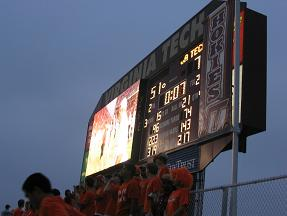

| | | |
 | The Hillcrest Hall TV Lounge is central command for those without football tickets. Here, Brad (left) will spend the next few hours of his time. He has season tickets, but as the RA on duty this evening, he has to be in the building from 6pm to 2am. Ryan (right) is waiting for friends to go out to the game with. I'll be heading out with Jeremy, who has gotten all dressed up for the occasion. |
| On the way, Jeremy and Susan (who is also in my English class) stopped to talk with some tailgaters they had met up with the week before. People get parking passes with their season tickets, and one of the most coveted parking places is Lot 1, right next to the football stadium. Walking through this lot was simply amazing. The people with their barbecue grills, their folding tents, their comfy chairs, the sheer amount of money needed for a contemporary tailgate setup simply boggles the mind. | |
| So, we got to our seats in the wild and crazy North End Zone Stands. These seats are just above the band, so it seems like any sort of cheer or whatnot that is done must be participated in by those in these seats. There was an especially loud and party-like atmosphere about the place. Possibly this was due to the relatively lax enforcement of seating. They checked your tickets about 4 times on the way into the stands, but once in, there was just the occasional security walkthrough. I suppose this was because it was the totally happenin' place to be, and they wanted to keep the excess partygoers to a minimum. In any case, it made the place quite a bit of fun. This is the wonderful view from our seats. Note that everybody is standing up. It seems like people feel that either this is the most efficient or most enjoyable or most proper way to view a football game. Because except for halftime and some of the time outs late in the game (after standing up for 4 hours), nobody ever sat down. In this picture, the Corps of Cadets are out on parade on the field (as they do in every game), and the Cadets' marching band (the "Highty Tighties") are preparing to perform the national anthem. |
| These are the East Stands. This section is (as they all except the North Stands are) predominantly alumni. However, you can clearly tell the student section (specifically, this is the students with season tickets section) from the rest by their strict adherence to the "wear only orange" rule of the "Orange Effect" game. "Orange effect" is something that the student government assocation thought up to raise money by selling thousands of t-shirts to wear at the designated "orange effect" football game. The goal is to have the whole stadium decked out in orange. However, either the alumni aren't told or theu just don't care, so they come in their more formal maroon and white polo shirts and baseball caps, thus making them easy to distinguish. Also, if you look carefully, you can tell that the entire student section is standing up... as they were the whole entire game. The alumni would sit down at every time out, and sometimes even (are you sitting down?) during plays. Scandalous. | |
| Hey, the Cadets are sitting down! An interesting tradition to note is that there are a few cadets out on the football practice fields behind the stadium with a cannon, which they proceed to fire off after every time we score a point. It is a very convienent way to tell if the guy stepped out of bounds on the way into the end zone. It's easier then looking at the refs, anyway. Oh, and they fire blanks. At least I hope. |
| Smile, Jeremy and Susan! Chris "The Midge" Midgley is behind me at the moment. He kind of organized this whole Hillcrest seating area thing. There's some more of them around here someplace. Or maybe this was when they all went to get snow cones. | |
| OK, it's Tech football traditions time! Here, people in the east stands are all holding their key rings out and shaking them. Why? Well, right now, Georgia Tech has the ball on their third down. Well, well, it's time for VT to make a "key play." Get it? Yeah, terribly corny, I know, but this one time I didn't shake my keys and Georgia Tech went on a 60 yard run and scored later on in that drive. It's all my fault! Oh, and in case you were wondering, there are no key plays on Tech's third downs. It is then that everybody gets eerily quiet. But that's not to say that they can't make noise right before and after the plays. |
| Now, here, everybody's going "OOOOOOOOOOOHHHHH!" Georgia Tech has the ball, and the point is to make so much noise that they can't hear anything that their playmaker is calling to them, thus defeating the "Audible." Suffice to say, it is really really really really loud. Please note, this is not to be confused with "Ooooooooooohhhhh!", which is when everybody goes "Ohh, Ohh, Ohh, Ohh" etc while pumping their fists (and if in the metal bleachers of the North Stands, stomping your feet) faster and faster up until the instant our team kicks off to the other team, at which point everybody gets deathly silent. As the team lines up, depending on how long they take, sometimes the crowd's going so fast it is all just a blur of noise (and yes, extremely loud.) | |
| Now here, everybody in the East Stands is performing "Block that Kick," which consists of everybody holding their hands together above their hands in a cupped shape and pushing down and away while saying "Block that Kick!" This proves quite useful during field goal attempts and kick offs by the other team. By the way, the people in the East Stands looked really weird while doing this one, as all their orange shirts were running together, so there were just thousands of arms pulsating wildly from a sea of orange. It was like an anemone (however you spell it) or something. |
| "Ohh! Ohh! Ohh! Ohh! Ohh! Ohh! Stick it in! Stick it in! Stick it in!" This one's done when we get within scoring distance (either by field goal or touchdown, whatever the case may be). There was a set of about 4 or 5 plays where this occurred in a row, when they 1) received the ball at their 5 yard line, 2) we intercepted the ball and returned to the 5 yard line, and 3) eventually scored. All the while, people were cheering, "stick it in." Well, either it's that or people are doing the motion the refs make to signify a first down to show their opinion of where the ball was down, because of course they could see it better from the nosebleed section then the ref, who happened to be 5 feet from the play at the time. And then, they get really upset when those refs choose not to take their advice. | |
| Being in the section with the band carries with it a lot of responsibilities. For one, you have to spearhead "the wave." After about 6 or 8 failed attempts to start the wave, we finally got one going that carried over to the West Stands, then proceeded to go around the entire stadium 6 or 8 times before dying out in the middle of the West Stands. Lazy alumni. This is it on about it's 4th go 'round. You can tell where it is from the lighter color of people's arms (again, on the sea of orange.) |
| Final score? 51-7. And they said it was going to be a close match. By the way, it should have been 58-7, because that guy clearly didn't step out of bounds on his touchdown run. The entire stadium was watching that instant replay on HokieVision (the giant TV) and when he got to the 25-yard mark (apparently where he stepped out) the whole stadum went "What?" at the same time because he clearly stayed in bounds the whole time. |  |
| One of the more peculiar traditions at games is that of counting off the score. Apparently we're so stupid down here that we need the practice. After every major score, everbody counts up to whatever the new score is (which at 51 points can take a while). Some of the more energetic fans count by throwing somebody up in the air. Here is one such group. Earlier on, I could count 7 or 8 different groups doing this at once. |
| Oh yeah, and after the game, I went back to helping the Honors people try to sell some prints... no, get donations and give them a free gift (I feel like a PBS pledge drive announcer) of a painting made by a VT alumnus during the Sugar Bowl in New Orleans (I think) in 2001. They ended up raising about $15,000 and handing out a bunch of mail order forms that day. If they reach their goal, they will set the record for a collegiate donation to the red cross. ($100,000. They're about $40,000 away.) | |

{kind=link}
{kind=link}
{kind=link}
{kind=link}
{kind=link}
{kind=link}
{kind=link}
{kind=link}
{kind=link}
{kind=link}
{kind=link}
{kind=link}
{kind=link}